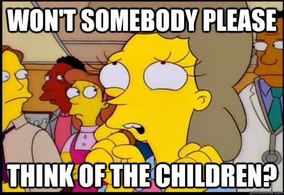

Davis was trained as a Historian at McMaster University, and as an Infantry soldier in the Canadian Forces. An author, strategist, Catholic medievalist, and an entrepreneur, his writing can be found at Stares at the World.


Over the past weekend, Hillary Clinton’s Democratic machine launched the first part of their October Surprise; their final attack on the reputation of Donald Trump. It comes in the form of a 2005 video obtained by the Washington Post. In the behind-the-scenes footage, as Trump prepares for a cameo role on Days Of Our Lives, he engages in some locker room banter with Billy Bush, one of the hosts of Access Hollywood. He starts off by telling Bush about attempting (and failing) to seduce a married woman, but it’s the statement that follows which has been drawing the most ire:
Yeah, that’s [Arianne Zucker]. With the gold. I better use some Tic Tacs just in case I start kissing her. You know, I’m automatically attracted to beautiful – I just start kissing them. It’s like a magnet. I just kiss. I don’t even wait. And when you’re a star they let you do it. You can do anything. Grab them by the pussy – you can do anything!
Bush laughs, and proceeds to comment on the legs of one of the other actresses walking by.
The video presented to the public has clearly been edited—there are several jumps during which we miss the intervening conversation—but even the final result is tame compared to what constitutes most public discourse in The Current Year. Topics such as Slut Walks, Kim Kardashian ‘breaking the Internet’ with her ass, pop starlets parading about on stage with sex toys, and the extreme forms of sexual perversion which are celebrated annually during Gay Pride Parades—all of these have become part of our ordinary discourse.
Parents bring their children to see midgets in gimp masks being led around on leashes, teenage girls listen to music which promotes bisexuality and hard drug use, grocery store tabloids report every single salacious scandal they can get a hold of, but when Donald Trump jokes about how much he likes kissing pretty girls? Better put a warning up for all of the ‘lewd’ language he’ll be using!

The rank hypocrisy of this pearl clutching is astounding. This form of locker room talk is the nothing more than simple, healthy, virile, masculinity. Since the dawn of humanity, men have sat around discussing the beauty of women, bragging about how popular they are with the ladies, and making crude sexual comments about what they’d like to do with them behind closed doors. While feminists might scream “Rape culture!” and “Objectification!” these are nothing but the ejaculates of diseased minds. Feminists have a pathological fear of healthy male sexuality, and so they conflate the admiration of beauty with the devaluation of personality, and the desire for a woman with the intent to take her by force.
It is a biological fact that men are the initiatory sex, and that women are the alluring sex. Throughout all of the animal kingdom, males have to prove their worth before a female will accept them as a mate, and it is the female’s alluring nature which drives them to compete in the first place. Locker room banter is just one of the many ways that the males of our species psych one another up in preparation. It isn’t just normal—it is morally correct.
The milk sops who are attacking Trump over this comment are criticizing his lack of politeness—the meek language we adopt whenever we find ourselves in mixed company. If his statements had been made in public they might have had a point—a frank conversation about bowel movements belongs in the doctor’s office, not at the dinner table, and telling a woman you barely know that you’d like to “grab her pussy” is the sort of social maladjustment that suggests a temperamental problem—but this was nothing more than a small clip of a long conversation, all of which happened behind closed doors, and exclusively amongst other men. Nobody present was offended—Bush’s own replies affirmed and agreed with Trump’s—and any man who denies having had a similar conversation is a bald faced liar.
Yes, the conversation was rude, but rude is not immoral; the behaviour that married couples get up to in the marital bed is also rude, and yet St Paul commands married couples to do it well, and to do it often. If you walked into a confessional and told the priest that you wanted to kiss pretty girls, he’d give you five Hail Marys for wasting his time, and even a nun like Mother Angelica can enjoy a bit of rude humor: after reading a Galatians 15:21 on her television show, she joked, “…drunkenness, orgies, and other things—oh my; I’m curious about what these other things might be!”
What sort of world is this where we expect Donald Trump to be better behaved than a Catholic nun? And what sort of hypocrites make up the Republican establishment, if this off-hand remark offends them? Do the indiscretions of the Democrats in general, and the Clintons in particular, even warrant a mention at this point? Or can we simply state that we’re living in a world of puritanical hypocrites, who promote the most depraved and debauched culture seen on this planet since the fall of Rome, but who are more than happy to scream “Pervert!” at their enemy because he once patted his wife’s derriere while boarding a plane?
The “recently” obtained footage which sparked this puerile controversy is anything but; it’s been sitting around for 11 years, and it’s no accident that they chose to release it right now. On its own it won’t be enough to damn Trump—on its own, it will only drive more attention to the sexual scandals surrounding Hillary and Bill. Joe Sixpack and Sally Homemaker might express the required outrage in public, but Joe will laugh it off in the pub, while Sally will compare it to Fifty Shades of Grey at her next book club meeting. In short order it will become little more than an internet meme with mass appeal:
Q: Did you hear about Trump’s plan for the blabbity-blah-blah-blah?
A: He’s going to grab it by the pussy!
The story’s only four days old, and already it’s petering out. While a multitude of establishment voices are treating this like some sort of “Gotcha!” moment, it’s doing nothing to sway your average voter. It’s just another case of the media reporting on itself, turning a non-issue into news and then reporting on said news because they themselves said it was newsworthy. Despite all the agitation from Republicans and Democrats alike, it’s a non starter… at least for now.

Keep in mind that the reported numbers are biased in favor of Hillary.
For months the mainstream media has ignored the many scandals surrounding the Clinton family—crimes not only suspected, but in some cases outright admitted. Independent journalists like Matt Forney have been tireless in their exposes on Clinton corruption and criminality, while the establishment has worked to smooth it over and agitate against Trump. Now that the election is entering its final days, these same journalists will be able to wield rumor and hearsay with abandon, since by the time it’s proven false it will be too late to matter.
Painting Trump as a sex addict is just the first part of the October surprise: Alex Jones of Infowars reports on a dossier he has received outlining the full extent of the Clintonian disinformation campaign.
Back in April, reports began to circulate that Donald Trump had been accused of raping a 13 year old girl over 20 years ago, along with Jeffrey Epstein of “Lolita Express” infamy (the man whose underage “pleasure island” Bill Clinton has visited over 100 times). Trump emphatically denied the accusations, and the California lawsuit alleging this criminality was filed under a false name, and dismissed over a “technical filing error”—namely that the accuser’s listed address was a foreclosed property whose owner was dead.
With nothing more forthcoming (and Bill’s own connections to Epstein) the story quickly faded into obscurity, but there has been a recent development: on September 30th the suit was refiled in New York on behalf of “Jane Doe” by Thomas Meagher, an attorney from Meagher Emanuel Laks Goldberg & Liao, LLP, a law firm specializing in intellectual property and patent litigation.
According to the information Alex Jones received, the current non-scandal is just a lead up, the jab preceding the punch. By planting the image of Donald Trump as some sort of sex-obsessed misogynist, the 20 year old claims in the civil suit will seem that much more plausible in the mind of the general public; furthermore, by accusing Trump of these sorts of crimes, it will thwart any attempts to question Hillary and Bill’s sexual history; both the former’s laughter at a 12 year old rape victim, and the latter’s many rape accusations by women who don’t hide behind pseudonyms.
The calumny being spread by the Democratic machine and their operatives within the media cannot be ignored. Every bit of it—even the ribald joking from this 11 year old clip—occurs in a wider context. There is an organized campaign to smear Donald Trump in the eyes of the public, while covering up the massive amounts of fraud, hypocrisy, and criminality which surrounds his opponent. It is crucial that we do all that we can to call out their narrative from the very get go, when its slanderous foundations are being laid, before their plans can come to fruition.
Twenty years ago political commentators were lamenting the sheer amount of mudslinging going on in presidential campaigns; with this election, the establishment has stooped to a new low of mendacious reporting. That Hillary Clinton is actively involved in these sorts of lies and manipulations is proof enough that she is unfit to be President; when you combine it with her warmongering, her interpersonal vileness, and her anti-American globalist leanings, one is forced to question how any decent human being could ever say “I’m With Her!”
This isn’t a case of a Democratic President who plans to remake America along the lines of some sort of Utopian vision; this is a sick and vile woman who ought to be serving time in prison for the crimes she has already admitted to, let alone the many more which she’s suspected of committing. Even if you believe the worst depictions of Donald Trump—that he’s an arrogant, shallow, privileged, womanizing, bully—he’s still infinitely better than a woman who laughs at rape victims.
It is incumbent upon all good hearted people, not just to vote in this election, but to stand up for the truth throughout this election season. Do not allow the slanderers to win through your own silence; stand up for the truth, and make yourself heard.
Read More: Political And Media Establishment Furiously Attack Trump For Being A Heterosexual Male